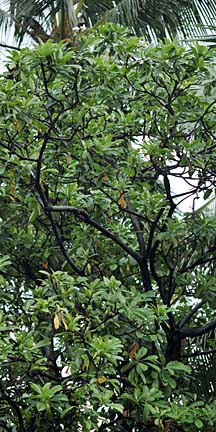
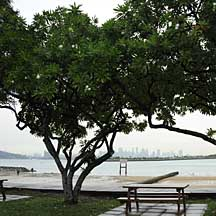
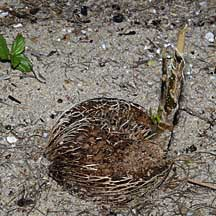
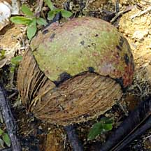
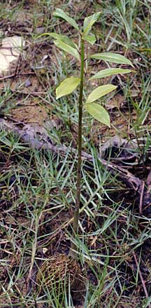
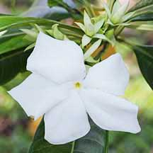
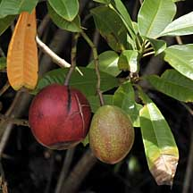
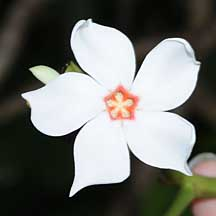
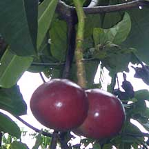

|
|
|
plants text index | photo
index
|
| coastal plants |
| Pong
pong tree Cerbera sp. Family Apocynaceae updated Jan 13 Where seen? The Yellow-eyed pong pong tree is a commonly planted tree in our parks and roadsides and is also sometimes seen growing wild on our shores. But the beautiful Pink-eyed pong pong tree is rare and only sometimes seen on our shores and coastal forests. Features: Tree up to 15m tall, but in Singapore usually shorter. Bark fissured, flaky, grey to brown with lenticels. Produces a white sap. Leaves (12-30cm long) oval, dark green and glossy, held in dense spirals at the tips of the twigs. Flowers (about 5cm) white appearing at the tips of the twigs. Fruits (5-7cm) spherical or ovoid, with 1-2 seeds. First green then pink, rosy purple and finally black. The fruits float are dispersed by water. When they wash up, often only the fibrous husk is left, around a hard stone. Human uses: According to Burkill, only the seeds are poisonous and no other part of the plant is toxic. In the Philippines, the seeds were used as a fish poison in small streams. The wood produces a fine charcoal that was used for gunpowder by the Thais. Oil pressed from the seeds were used in lamps but produces an irritating smoke. Medicinal uses for the oil include treating itches, rheumatism, the common cold and as hair oil that doubled up as insect repellent. According to Corners, the fruits are poisonous and native medicinal uses are made of the bark, leaves and oil extracted from the seeds. According to Tomlinson, some native societies use the fruits as a means of committing suicide. According to Wee, the tree contains cerberin or cerberoside. According to Giesen, cerberin is similar in structure to digoxin, found in foxglove, which kills by blocking calcium ion channels in heart muscles and disrupting the heartbeat. More ominiously, it is also suspected of being used in an increasing number of murder cases. The bark, sap and leaves are used as a purgative, and for inducing abortion. Status and threats: Cerbera odollam is listed as 'Vulnerable' while Cerbera manghas is listed as 'Critically Endangered' on the Red List of threatened plants of Singapore. |
 Growing wild. Pulau Semakau, Jan 09  Planted in a park. Changi, Apr 09 |
|
 Sisters Island, Aug 09  Changi, Apr 09 |
 Fruit germinating on the high shore. Pulau Ubin, Nov 09 |
Pong pong trees on Singapore shores
|
 Flower with yellow eye. |
 Fruits globular, round. Solitary. |
|
 Flower with pink eye. |
 Fruits oblong, mango-shaped. Often paired. |
|
Links
References
|
|
|